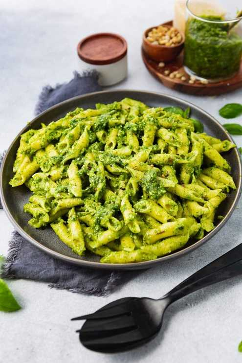

Return to Home
Pesto Pasta Recipe

About this Recipe
If you’ve ever made pesto pasta and found that it a bit on the dry side, then tried to salvage it by adding more
and more olive oil only to end up with an excessively greasy pasta, you’ll love the technique I’m sharing today.
Ingredients
- Pasta or Spagetti
- Oil (I recommend Olive)
- Black Pepper
- Pesto
Steps
- Cook the pasta for 10 minutes in boiling water on a simmer.
- Drain the pasta water.
- Mix in the pesto and black pepper.